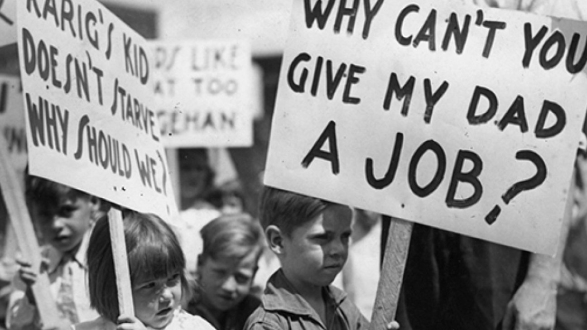
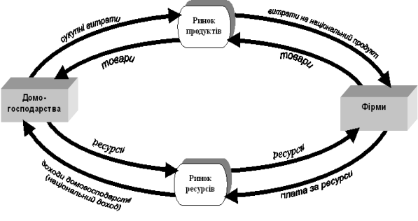
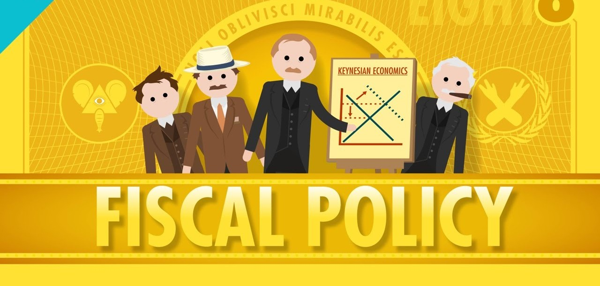

Як працює парадокс?
Цей феномен описав британський економіст Джон Мейнард Кейнс у 1930-х роках під час Великої депресії. Суть парадоксу полягає в наступному: Коли люди масово починають заощаджувати, вони скорочують споживання. Менше споживання означає менший попит на товари та послуги. Виробники, бачачи падіння попиту, скорочують виробництво та звільняють працівників. Безробітні люди змушені заощаджувати ще більше (або витрачати заощадження на виживання), що ще більше зменшує сукупний попит. Утворюється спіраль економічного спаду.

Економічні факти "Великої депресіЇ (1929–1939)"
Велика депресія супроводжувалася падінням ВВП США на близько 30%, безробіттям понад 25%, скороченням промислового виробництва майже на 45% і падінням індексу Доу-Джонса більш ніж на 80%. Споживчі витрати та інвестиції різко зменшилися, що призвело до дефляції й масових банкрутств.
Реальний приклад: Японія 1990-х
Класичним прикладом є Японія після лопання спекулятивної бульбашки на початку 1990-х років. Після економічного буму 1980-х настала криза, і японці почали масово заощаджувати, побоюючись майбутнього. Норма заощаджень домогосподарств сягнула понад 15%. Результат виявився протилежним очікуваному. Замість економічного зміцнення країна потрапила в період, який назвали "втраченим десятиліттям" (а фактично це тривало більше 20 років). ВВП практично не зростав, дефляція стала хронічною проблемою, а безробіття збільшилося. Японці намагалися захистити себе заощадженнями, але масові заощадження призвели до стагнації економіки.

Чому це важливо розуміти?
Це класичний приклад помилки композиції: те, що вигідно окремій людині, може бути шкідливим для суспільства в цілому. В економіці все пов’язано — витрати одних є доходами інших. Якщо всі скорочують витрати, кругообіг грошей сповільнюється, і страждає вся економіка.
Коли парадокс не працює:
- Під час рецесії або кризи — коли економіка має надлишкові виробничі потужності та високе безробіття. Саме тоді додатковий попит міг би стимулювати зростання.
- При низьких процентних ставках— коли центральний банк не може ефективно стимулювати економіку через монетарну політику (так звана "пастка ліквідності").
- У закритій економіці — в країнах з високою відкритістю економіки заощадження можуть інвестуватися за кордоном, пом'якшуючи негативний ефект. Водночас, в умовах економічного зростання з повною зайнятістю, заощадження є корисними, бо вони створюють ресурси для інвестицій та майбутнього розвитку.
Уроки для економічної політики
Парадокс ощадливості пояснює, чому під час криз уряди часто роблять протилежне тому, що робили б домогосподарства — вони збільшують витрати замість їх скорочення. Це називається контрциклічною фіскальною політикою. Коли приватний сектор заощаджує, держава має компенсувати падіння попиту своїми витратами на інфраструктуру, соціальні програми, субсидії. Так вона підтримує кругообіг доходів та запобігає поглибленню кризи. Це не означає, що дефіцит бюджету завжди корисний, але в певні моменти він може бути меншим злом порівняно з економічним колапсом через недостатній сукупний попит.
Висновок
Парадокс ощадливості нагадує нам, що економіка — це складна система взаємозв'язків, де інтуїція може підводити. Те, що працює на мікрорівні, може давати протилежний ефект на макрорівні. Розуміння цього парадоксу допомагає краще зрозуміти економічну політику під час криз та усвідомити, що в економіці немає простих відповідей на складні питання.